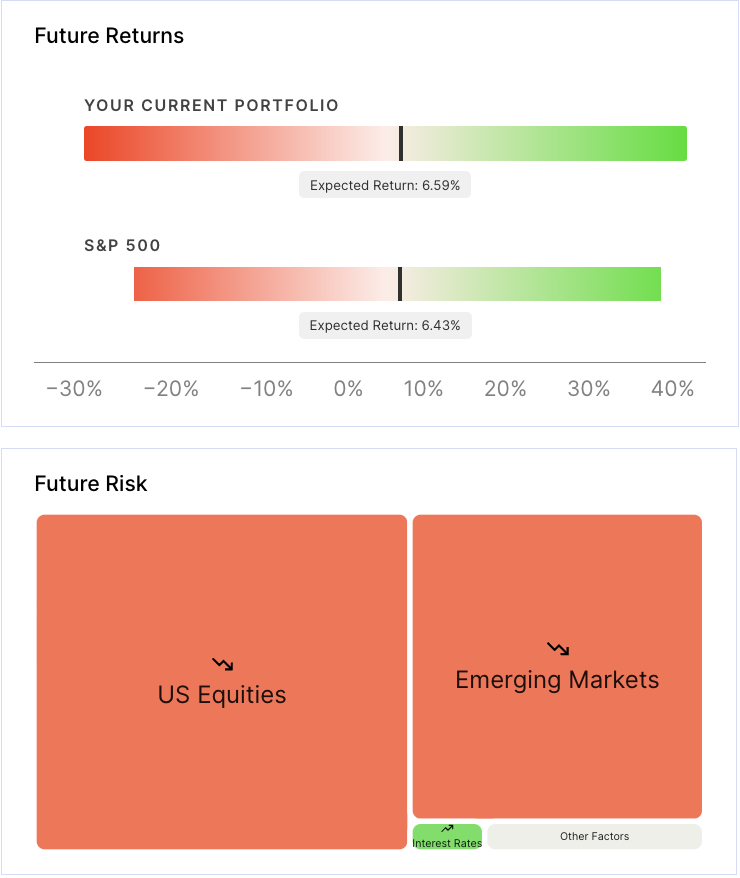
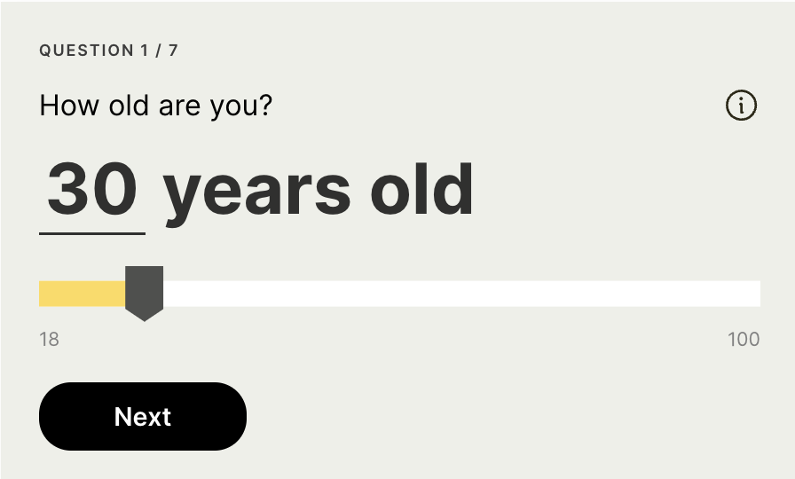
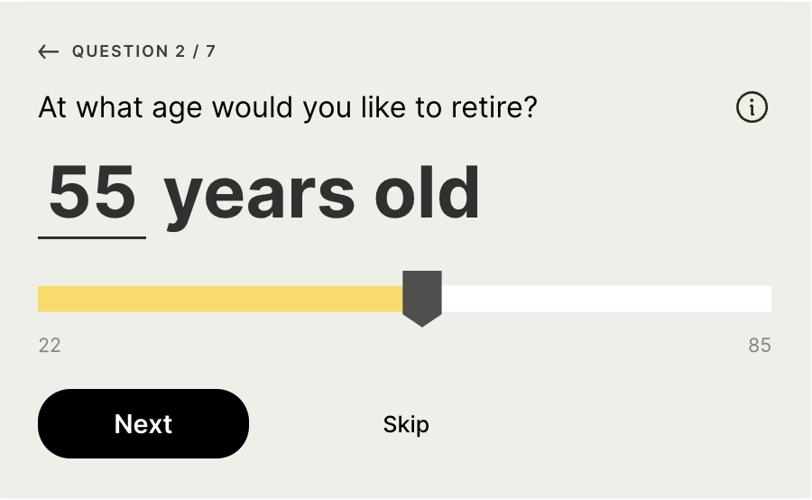
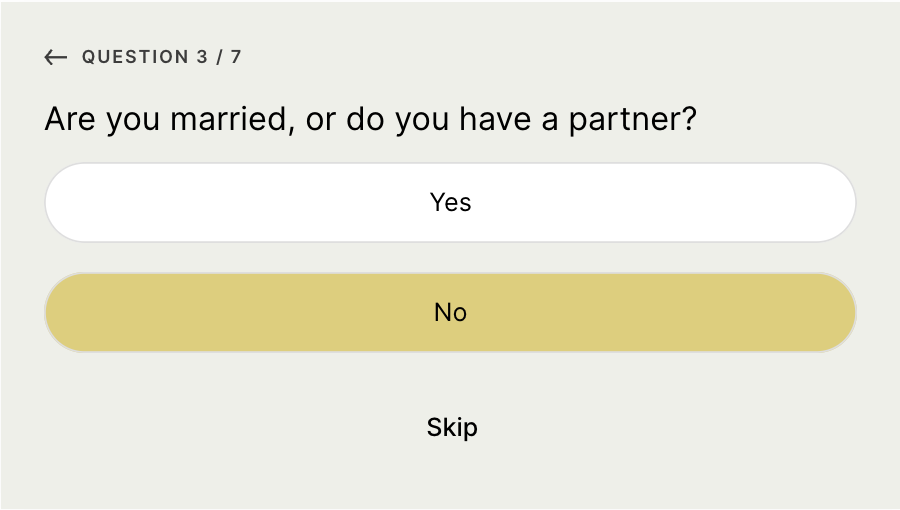
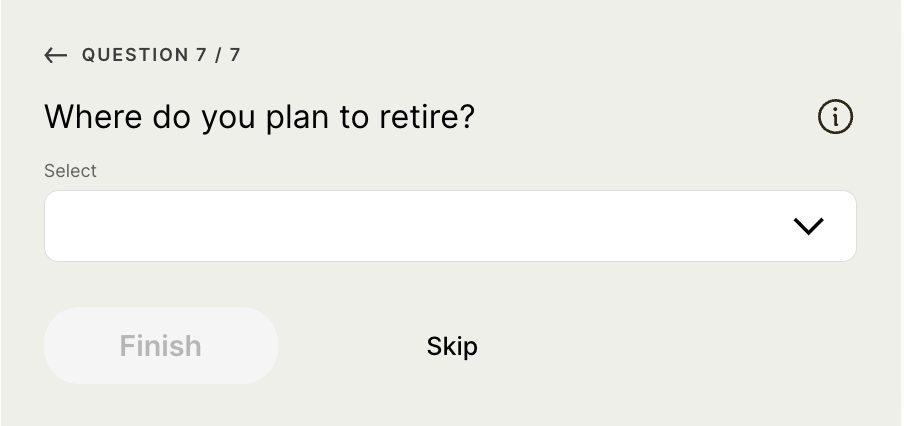
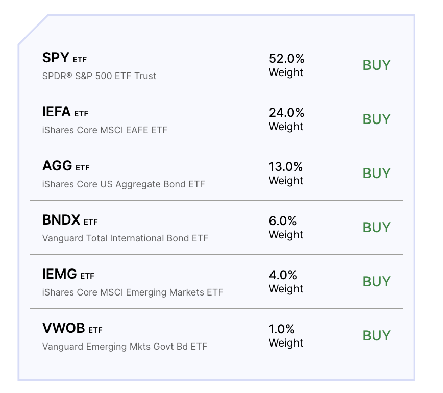
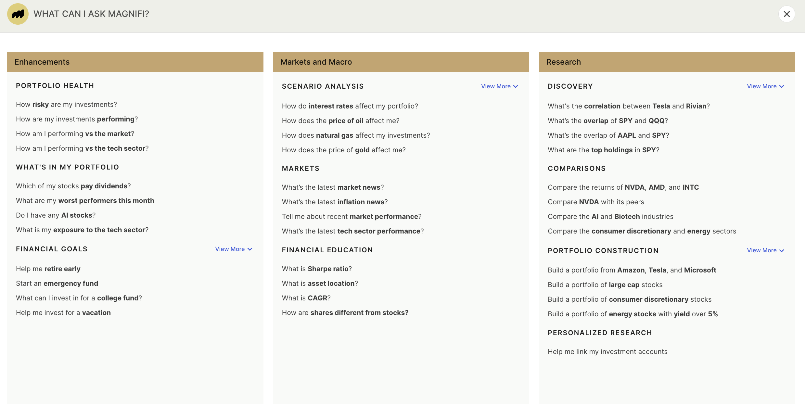
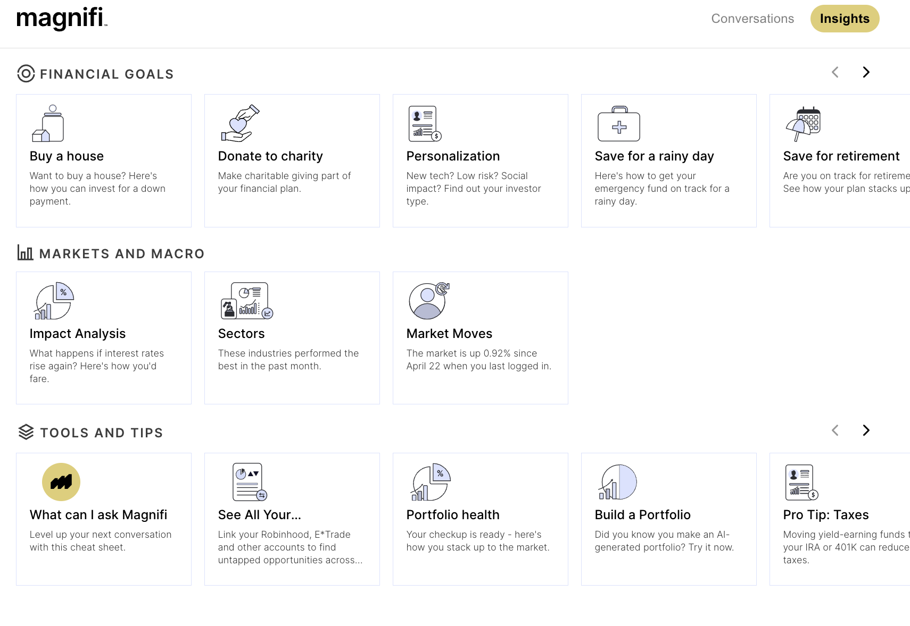

Introduction
In preparing for our final project– an AI agent focused on offering investment advice to college students– Emmy and I discovered a cutting-edge portfolio management AI platform called Magnifi. Denoted by many as the cross between ChatGPT and Robinhood (a modern buy/sell tool promoted to younger clientele), Magnifi is one of the first investing platforms that uses ChatGPT and computer programs to provide personalized, data-driven investment advice. While this blog post doesn’t have an exact hypothesis, it will document some of my time playing around with this fascinating tool! Enjoy my testing.
Messing Around with Magnifi
Prompt:
Hi!
Response:
Hi Kendall, I’m Magnifi. As an AI assistant I’ll help you unlock your full potential — putting you in the driver’s seat to plan, manage, and take control of your financial goals. One of the biggest pieces of this puzzle is investing. Have you ever invested before?
Prompt:
Yes
Response:
Since you are already investing, I can help you with a quick scan of your investments and share some findings.
To get a holistic view of your investments, let’s connect your existing accounts
Prompt:
Now that my accounts are connected, tell me about my investments!
Response:
Here are the top holdings in your current portfolio:
Prompt:
What advice do you have for me?
Response:
I apologize I do not have the data for that yet. Please try asking me another question.
Prompt:
How can I diversify my portfolio?
Response:
I have analyzed your holdings for insights. Here are some of the areas to explore.
Popular responses:
Am I exposed to single stock risk? How much fund fees do I pay? What are my best investments this year? Stocks with high dividend yield in my portfolio How much single stock risk do I have in my portfolio? What else can I ask Magnifi?
Prompt:
Am I exposed to single stock risk?
Response:
Looks like you don’t have any single stock risk in you portfolio. (This is not a typo on my/the user end. This was Magnifi’s verbatim reply.)
Prompt:
Can you check my portfolio health?
Response:
Using the S&P 500 as a benchmark, I am running a comprehensive analysis of your projected growth and risk factors. Your current portfolio carries a bit more risk than average but also has more possible upside. Negative performance in U.S. equities would have the most potential for losses in your future. Meanwhile, rising interest rates have the most potential to positively impact your growth. Click below to explore more.

Prompt:
Help me retire early.
Response:
I can help you create a quick financial plan to see if you’re on target for retirement. You should strive to save 10-15% of your pre-tax income (including employer contributions) every year towards retirement. It is recommended to have saved around 10 times your average annual salary by the time you reach age 65 for retirement.




Based on factors including expected social security, the state you’ll retire in, and wealth needed to maintain your current standard of living, you’ll likely need $71.0K by the age of 55 to retire. Here is your projected growth:
With your initial investment of $0 and contribution of $10,740 each year, your chance of hitting the retirement goal of $71.0K is currently 100%. You can still adjust the plan to retire earlier or decrease your savings rate to see how it affects your odds.
Prompt:
Show me the recommended portfolio.
Response:

Prompt:
What else can I ask Magnifi?
Response:


Just in this initial, somewhat surface-level testing, I noticed a lot:
- Magnifi is a full financial website, not just prompt-and-response agent. The AI assitant was just one of many features on the website
- The platform uses Plaid, a company that allows fintech services to securely connect to user’s 3rd-party accounts. I was honestly initially nervous about the pressure it was putting on me to link my accounts, but I ended up putting in my Vanguard information to see how personalized it could be
- The AI functionality had some visible flaws as a basic level. It was hard for me to click the entry bar just to type a question (something was definitely faulty on the backend), and there was noticeably incorrect grammar
- It seems like the AI assistant runs mostly off of suggested, basic questions. Any time I asked something, it would direct me to ask the pre-loaded questions rather than continue with my own line of reasoning
- The platform was really user friendly, but lacked the depth/surety I expected from it. It asked me really easy-to-answer questions when I engaged with the retirement prompt, but then offered no timeline, tips, or ease for the portfolio development beyond being able to add the stocks to my cart via its purchase function
- Overall, it just felt like Magnifi was made for people who already have a background in investing, know what they are doing, and just want to check specific stats or look at certain goals for which they are already planning. While the platform offers a lot for that demographic, I hope Emmy and I are able to work on creating something a bit more entry-level! Really enjoyed getting to try it out, though.